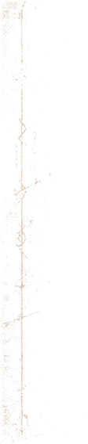
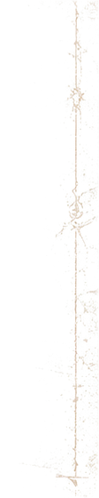

La Likbør / Estudo independente
Desgaste contínuo da referência
Regiões maiores do mockup original, mantidas nas coordenadas de origem. Os PNGs já contêm a transparência preparada. A versão atual da homepage permanece intacta.
1. Overlay sobre preto
Mesma composição em duas intensidades. O nível acentuado tem alpha 2,4× maior no arquivo, limitado a 100%. Sem filtro, blend especial, opacity ou máscara CSS.

Acentuada

Laterais em escala nativa — 1 pixel do arquivo = 1 pixel CSS
Estas imagens são fatias não espelhadas do overlay composto. A prévia ampla acima é reduzida em telas pequenas; aqui os traços mantêm sua espessura original.


2. Overlay sobre área com moldura
A moldura abaixo é apenas um filete bronze. Toda irregularidade visível dentro dela pertence ao PNG.
3. Sobre a composição atual do hero
Foto, logo, círculo, textos e proporções preservados. Cada exemplo é uma página de teste independente. No mobile, as laterais ficam em escala nativa; a região inferior é uma fatia contínua separada, sem repetição.
Normal
Abrir hero normal em tela inteiraAcentuada
Abrir hero acentuado em tela inteira4. O que foi extraído
Verde: regiões contínuas consideradas. Vermelho: conteúdo descartado, incluindo foto, lettering, órbita original, navegação, texto e botões. O alpha final usa apenas a interseção segura.

Não foi possível separar com segurança o desgaste misturado ao lettering ou ao círculo. Essas partes foram descartadas; o círculo existente no hero continua independente. Nenhum galho, risco ou ornamento foi inventado.
Coordenadas e proveniência da extração · Documentação do estudo